The map design is an important part of any FPS as the player will have to use his surroundings to hide from the enemies or to target who he wants to shoot. The map can help a player devise a strategy using what is around him, it can give one player the advantage over others if he knows how to use it.
It will be designed in a simple, cartoon-like style.
Here are some inspirations we took :
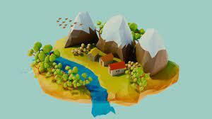
We had planned to get 25% done which corresponds to 1 of our 4 maps to be completed and that is indeed what was achieved. To do so Bede started using a tool called blender that was brand new to him so he decided to learn how to use it by creating objects to go around his map, first creating a bridge and then creating a hunting perch all in the low-poly style.
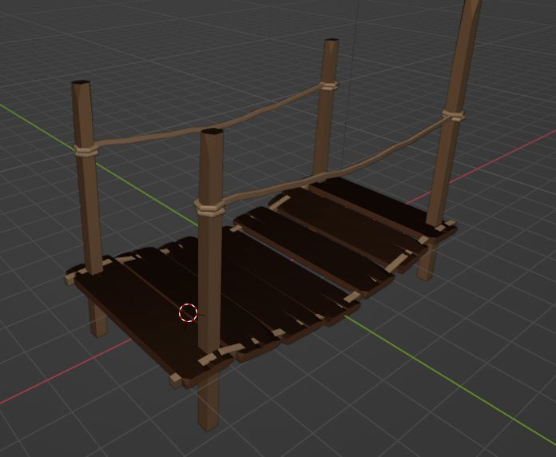
Whilst making these Bede had a good friend teaching him the basics whilst at the same time reading and watching tips online. These two rather simple objects took a long time to do because we wanted to reach a certain level of detail but also make sure all the right tools were used as efficiently as possible.
He then got to work on creating the terrain of the map which was also made in blender but before Bede actually got started he sketched out a draft for the layout where he already had pictured two hills with a river in the middle with a lack of cover.
So it was designed in blender and decorated with trees Bede created and the objects he talked about beforehand. Once he had the structure of the map down, he got to doing the colors/textures. For this he used something called UV editing which consists in having a color pallet and assigning colors from the pallet to dif- ferent objects at the same time. This allowed to only have one material that colored every object correctly.
After this all that was left was to export the blender project as a .fbx which is my preferred way to exports the objects while keeping the colors without any major problems.
At the start when exporting his objects, Bede did have problems with the colors because he used a special method that takes one material and raps it around objects in different area and at the start when he would open the map in unity all the colors would be mixed up but he managed to solve this by change the material settings in unity which solved the issue and made all the colors show correctly.
After this he needed to add a hitbox onto the map so that the player could walk around and collide with objects. In normal cases you want to have a smaller mesh and adapt it to the object for optimal collision but here to the size and amount to different collisions using a mesh collider was necessary even if it is not the most optimal.
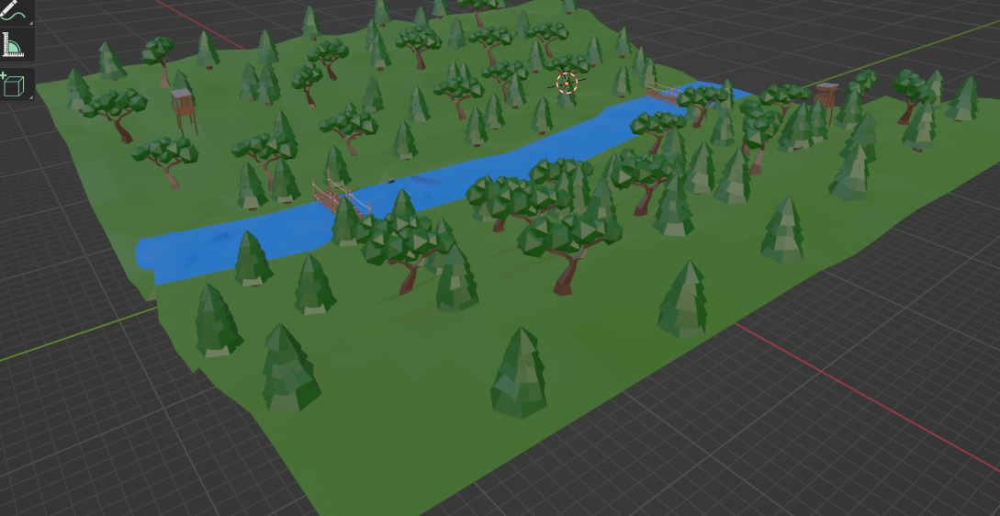
Second Defense :
Similarly to the first defence Bede was in charge of the graphic design of a map for our video game. He had planned to be at about 75% done with the overall map design and that is about where he stands today as he has added a fully new map to our game.
The first step to create this map was to think about it and have a rough sketch mapped out for it. He decided that due to the fact he had already worked on blender now and was quite aware of how this tool worked he decided to create a map with more detail, specifically in the objects that would be scattered around the map. Focusing this time on the details he went for a smaller-scale map that could be played 1 against one or 2 against 2.
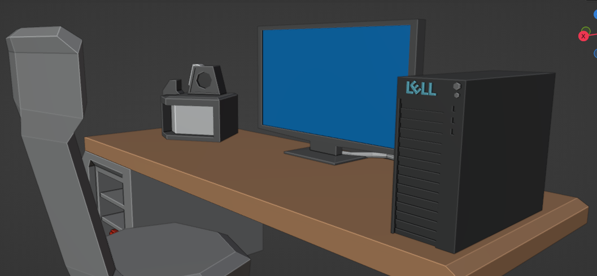
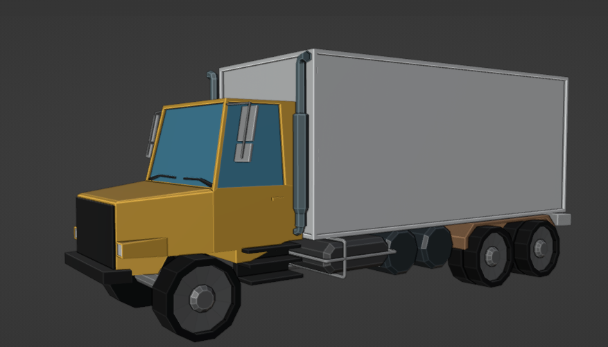
He chose for this map a rather industrial/workplace theme and after having sketched out a draft for the map he got to work on creating objects to put around the map taking time to add small details to give a true personality to the game.
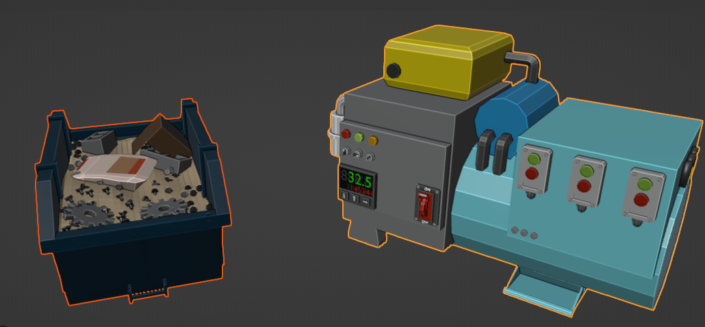
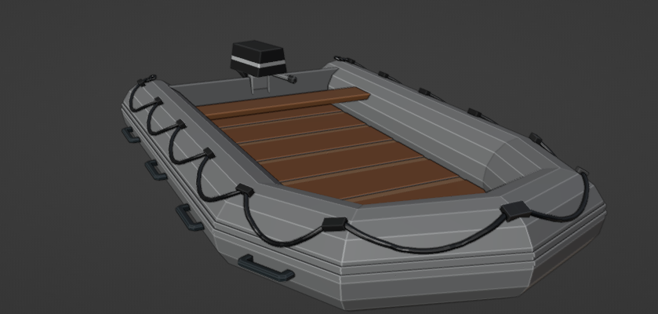
After having his objects created he got to work on the main terrain and two buildings he planned to add.
The issues Bede very quickly encountered and slowed him down were the overlapping of surfaces causing him to not be able to move every element as he wanted to. This was due to the fact that he was still rather inexperienced with the creation of a house, for example, he hadn't taken into account the thickness of his walls and this led to a very strange-looking house, so he started over and over each time learning from my mistakes until he was happy with what he had created.
Once he was done with this he got to scaling his objects to place around the terrain and in the buildings, it all came together very nicely and after changing up some colours and shading he was finally happy with the result and exported it to unity where he simply added a hitbox and imported the textures he had used and the job was done.
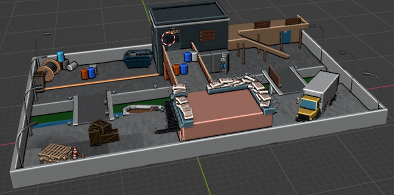
Finished Product
Bede had put in a lot of work and effort for the second defense
and was very happy with the second map he created but it also
made him realise that the effort he had put into the first one was
not enough so he reworked adding more elements to the environ-
ment and details but also rescaling it to give the large and more
open feel.
Bede started off by changing the scale of the trees as they were
simply too small and then removed some to give less coverage to
the player, he then proceeded to create small assets such as logs,
bushes or rocks to decorate the map and make it more detailed.
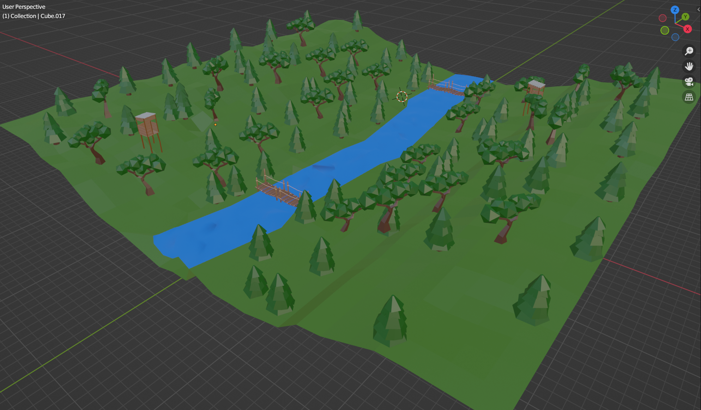
As for the second map, he went on to add more detail as with
these extra add-ons it looks great. He also added a rough envi-
ronment around the second map because it was smaller and he
did not want it to just be a floating map or with walls around it.
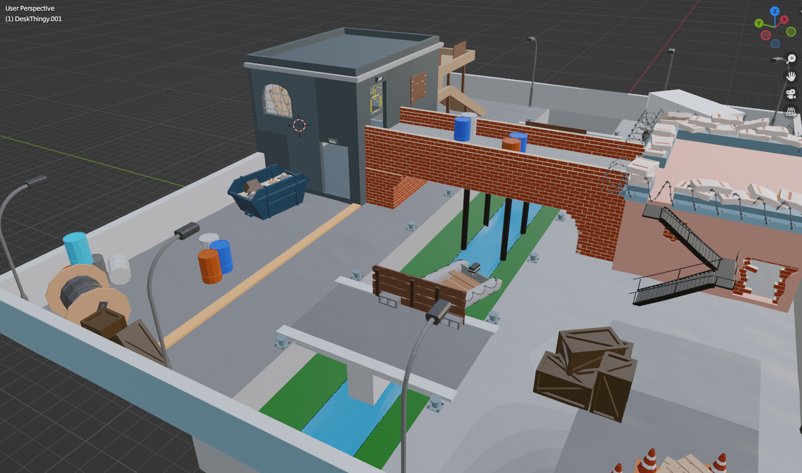
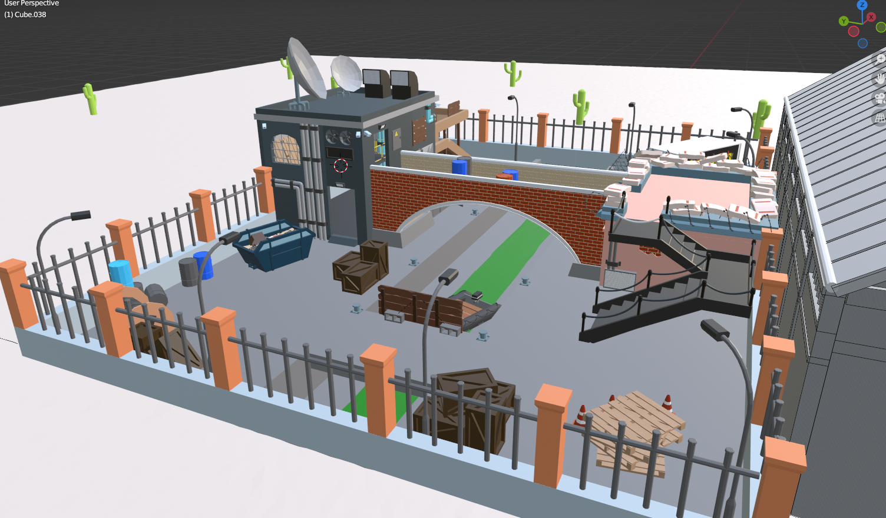